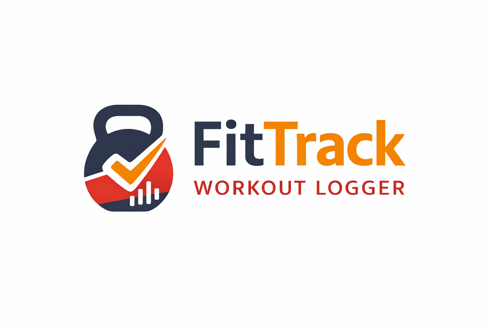

Overview
Purpose
FitTrack is a personal workout logging app that allows users to record, analyze, and review their workouts directly in their browser. The site doesn't require any account creation or a backend server because all the data is stored locally on the machine.
Audience
FitTrack is designed for fitness enthusiasts who work out consistently and want a lightweight tool to track their workouts without worrying about the hassle of an annoying bloated fitness app. The website app is meant for people who are used to browsing the internet on both mobile and desktop platforms, who value simplicity, agility, and practicality in their fitness tracking.
Dynamic elements
JavaScript powers the core functionality of FitTrack. When a user submits a workout
through the log form, a logWorkout() function captures the input,
constructs a workout object (containing date, exercise name, sets,
reps, and notes), and pushes it into a workouts array stored via
localStorage. A renderWorkouts() function uses
forEach to loop through saved workouts and dynamically build and
insert HTML cards into the DOM. Filtering by exercise name or date uses the
filter() array method, and a stats summary panel uses
reduce() to calculate total sets logged. Event listeners handle form
submission, filter input changes, and delete button clicks on each workout card.
Conditional branching is used to check for empty states (showing a friendly
"No workouts yet" message), to validate that required fields are filled before
saving, and to toggle between the log form and history views. The entire experience
is driven by DOM selection, modification, and event handling — no page reloads required.
Branding
Website Logo

Style Guide
Color Palette
Palette URL: https://coolors.co/1a1a2e-f0a500-e84545-16213e-e0e0e0| Primary | Secondary | Accent 1 | Accent 2 |
|---|---|---|---|
| #1A1A2E | #F0A500 | #E84545 | #16213E |
Typography
The heading font is bold and strong to convey confidence and structure. The paragraph font is clean and highly readable at small sizes for workout data. Both are available via Google Fonts.
Heading Font: Oswald (Bold, 700 weight)
Paragraph Font: Source Sans 3 (Regular, 400 weight)
Normal paragraph example
Track every rep. Every set. Every session. Own it! FitTrack keeps your workout history organized so you can focus on what matters: getting those sweet gains! Log your exercises, browse your history, and see your totals grow over time. No accounts. No syncing. Just your data, right here in your browser.
Colored paragraph example
Warning: Logging a workout is addictive. Users have reported an overwhelming urge to keep their streaks alive. Proceed with discipline.
Navigation
Content
Home page
The home page serves as the landing screen for FitTrack. It includes:
- A hero section with the FitTrack logo, a tagline ("Log it. Track it. Own it."), and a prominent "Log a Workout" call-to-action button.
- A brief "How it works" section with three steps: Log → Review → Improve, each illustrated with a simple icon.
- A live stats bar pulled dynamically from localStorage: total workouts logged, total sets completed, and most frequently logged exercise.
- A preview of the three most recent workouts, rendered as cards by JavaScript.
Images needed: FitTrack logo, 3 simple icon graphics (dumbbell, list/clipboard, chart/arrow-up).
Log & History Page (log.html)
This child page contains two main sections toggled by JavaScript:
-
Log Form: A form where the user enters the workout date,
exercise name (e.g. "Bench Press"), number of sets, reps per set, weight
used (lbs), and optional notes. On submit, the entry is saved to
localStorageand a success message is shown. - Workout History: A filterable list of all logged workouts displayed as cards. Each card shows the date, exercise, sets × reps, weight, and notes. A search/filter input lets users filter by exercise name. A delete button on each card removes that entry from localStorage and re-renders the list.
Sample data to pre-populate for demo purposes:
[
{ date: "2025-03-10", exercise: "Squat", sets: 4, reps: 8, weight: 185, notes: "Felt strong today" },
{ date: "2025-03-11", exercise: "Bench Press", sets: 4, reps: 6, weight: 155, notes: "Slight shoulder tightness" },
{ date: "2025-03-12", exercise: "Deadlift", sets: 3, reps: 5, weight: 225, notes: "" },
{ date: "2025-03-13", exercise: "Pull-ups", sets: 3, reps: 10, weight: 0, notes: "Bodyweight" },
{ date: "2025-03-14", exercise: "Overhead Press", sets: 3, reps: 8, weight: 95, notes: "" }
]
Wireframes
Home Page Wireframe
The home page follows a single-column mobile-first layout: top nav bar → hero (logo + tagline + CTA button) → stats bar (3 numbers side by side) → "How It Works" three-step row → recent workouts card grid (stacks on mobile, 3-col on desktop).

